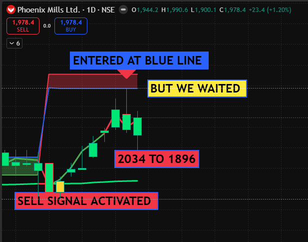
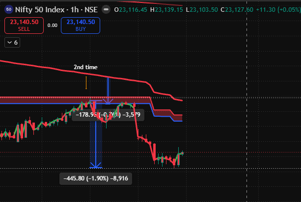
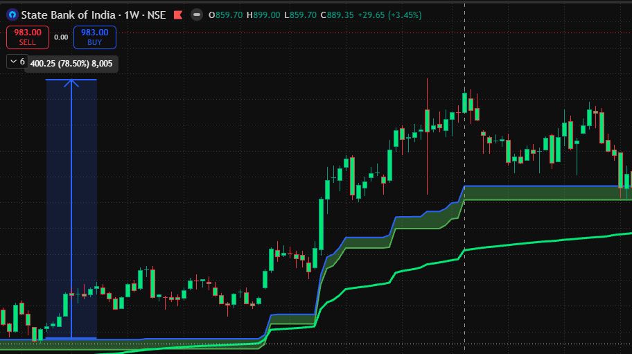

Support / buy watch
Blue stays above red. After the buy signal, price pulls back to the blue band. Look for the band to hold and the trend to continue.
Illustrative diagram · no live market dataIndicator guide · V2.1
A simple way to read trend direction and plan a blue band retest. First identify the blue and red line relationship. Then wait for the signal and the return to the band.
The diagrams are teaching illustrations; the later chart examples use supplied screenshots. Neither is a live signal.
01 / Read the structure
The position of the blue line relative to the red line sets the working bias. Look for the blue band as the area where a retest may offer an entry.
Treat the blue band as the support area. After a buy signal, watch for price to return to the band and show support before considering a buy.
Treat the blue band as the resistance area. After a sell signal, watch for price to return to the band and show rejection before considering a sell.
02 / Wait for the retest
A signal by itself is not the entry described here. Follow the same three-part sequence for either direction.
Blue above red: focus on support and buy setups. Blue below red: focus on resistance and sell setups.
A buy or sell signal places that side on watch. Do not treat the first signal candle as an automatic trade.
Let price return to the band. For a buy, look for support; for a sell, look for rejection. Plan your risk before entering.
03 / See both directions
These diagrams show the sequence only. They do not reproduce the indicator's exact plotted values, candles, or alert logic.
Blue stays above red. After the buy signal, price pulls back to the blue band. Look for the band to hold and the trend to continue.
Illustrative diagram · no live market dataBlue stays below red. After the sell signal, price rises back toward the blue band. Look for rejection and renewed downside movement.
Illustrative diagram · no live market data04 / Chart example · Phoenix Mills

The sell signal appeared first. Rather than entering immediately, the setup waited as price rallied back toward the blue line beneath the red resistance area.
The chart marks 2034 → 1896, a 138-point difference. Waiting for the retest may allow a tighter, clearly defined risk area relative to the potential downside move. The reward is a possibility, not an assured outcome.
05 / Chart example · Nifty 50

The chart marks a “2nd time†approach to the resistance area. Price rose back toward the blue line while the red line remained above it, then moved lower.
The screenshot includes a measured decline labelled −445.80 (−1.90%). That is a chart annotation, not a verified entry-to-exit trade result. A retest can create a more clearly defined risk area while leaving room for a larger move if the downtrend continues.
06 / Chart example · State Bank of India · Weekly

Use the buy activation as an alert to watch the trend. In this example, price later returns to the rising blue band. The latest candles test that support area and begin to bounce.
A golden rule for positional traders: let the weekly setup return to support instead of chasing the initial signal. The screenshot shows an early bounce, not proof of a completed profitable trade. If support fails, reassess the buy idea.